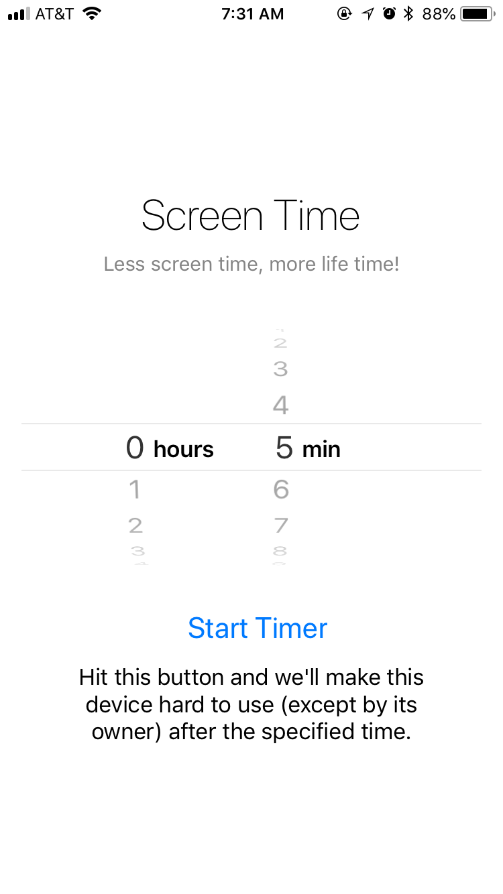
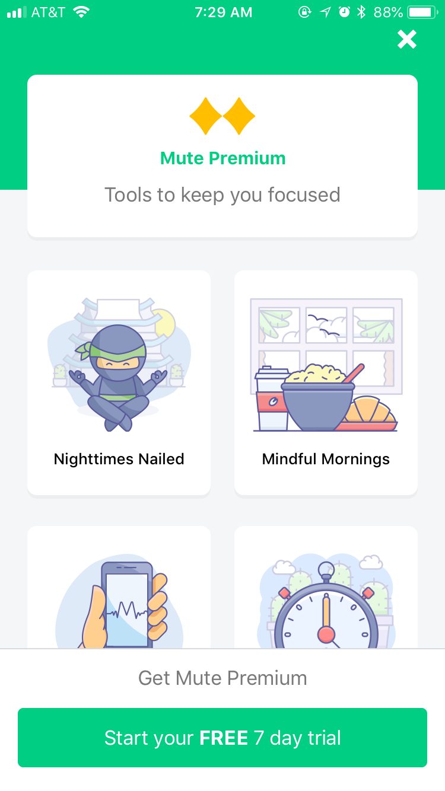

There have been few resources for lessening screen time, but I found two apps that shared that same goal: ScreenTime, and Mute. Learning more about these apps will be preparation to help me develop a better functioning app or program.
ScreenTime
Interface Design:
ScreenTime is an app with an incredibly simple interface. The app icon itself is in black and white, with an image of what appears to be a parent holding its child’s hand, so it seems to be function with parental controls in mind. It is designed to flow with iOS in mind, using the same sans serif font, Helvetica Neue (Ultralight?), as well as a simple, black text on white background screen. Throughout the entire app, there is only one screen. Although the one simple, no-fuss screen is great, I can’t help but think that it’s mildly boring. But I thank its straightforward design over Mute’s.
Interaction Design:
ScreenTime fails the interaction Design, in my opinion. The app has fun, tactile movement through the usage of an Apple picker, or the wheel that ticks when dragged through for a selection. At first, it reminded me of the Timer feature included in the standard iOS Clock. Then I realized it essentially was that.
The ScreenTime app functions almost exactly like the Timer, from the timer capability to the alarm that happens once the pre allotted screen usage time runs out. The only difference was that I could not choose the alarm, and for some reason, the alarm did not work.
Overall Experience:
The ScreenTime app did not even work for me, once time was up. In fact, the Timer feature in iOS’s Clock app (or in any other time keeping application, really) functions better. I would not recommend this app, but if there was one takeaway it would be that the existing Apple interface makes an easy to learn program. I would give ScreenTime bonus points for being free over Mute’s disappointing price, but since the app was basically something I already had, this would be too generous.
Mute
Interface Design:
The interface design for Mute, on the other hand, was very cute and interesting. With a color palette of brights and pastels in green and purple, Mute provided illustrations for each selection choice. Mute’s usage of emojis in its copy is also a casual stylistic touch, which gives me the impression it is fun and friendly.
Interaction Design:
While ScreenTime was too simple to use, Mute was too stressful. (“How exactly does an app designed to improve productivity and living generate such stress?” you’d ask.) Upon getting through downloading the app, at first I was greeted with the same permissions requests that ScreenTime also gave me—this was for location services and notifications. Right after this, I was greeted with a video—an ad already? I thought. The video turned out to be a message from the creator in his dining room speaking to the user, telling them to go for Premium. Weird. So yes, an ad. I couldn’t exit out so I ignored it, thinking it wouldn’t matter since I downloaded the app for free. That is, until I tried picking a selection and I was automatically alerted with paying for the full version, or the free trial. After selecting the latter, I was alerted that I would be charged $50 for the rest of the year after my one week free trial version. It was at this point that I closed the app.
Overall Experience:
Mute had a lot of potential, or so it seemed, from the attractive interface design. However, it failed to keep my attention after the hefty price was shown, so I did not experience the free trial. Although I did not keep going, I think that should be noted, for others who might have also stopped after seeing what it actually cost if one forgot to cancel their trial subscription.